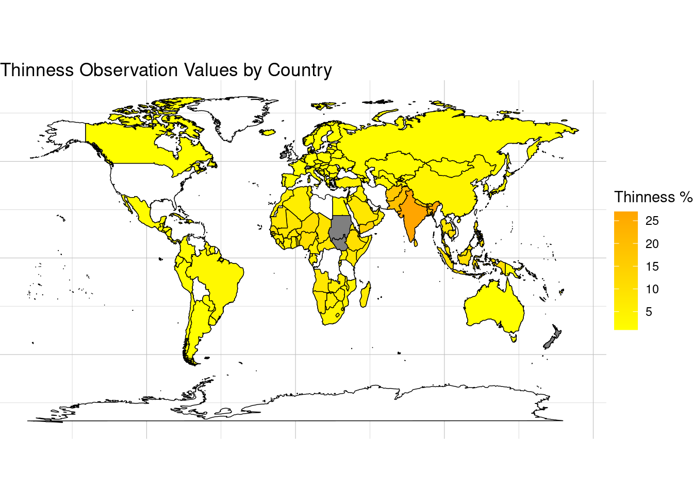
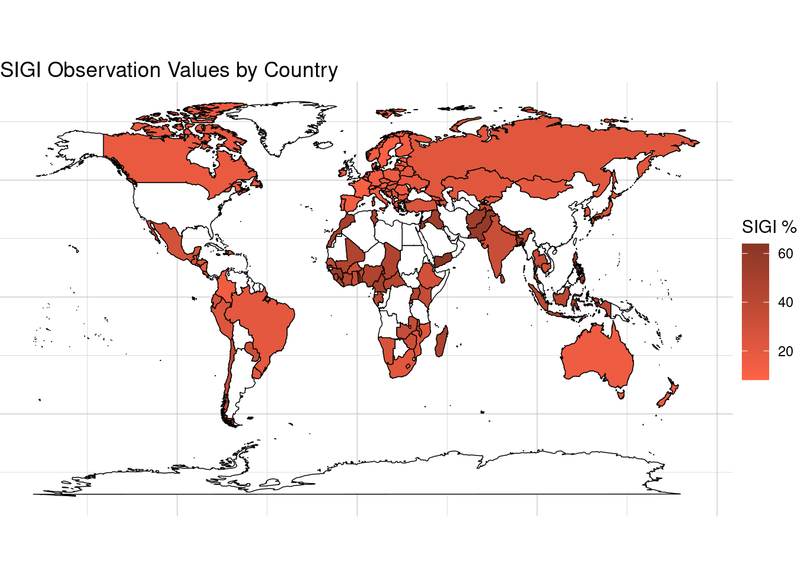
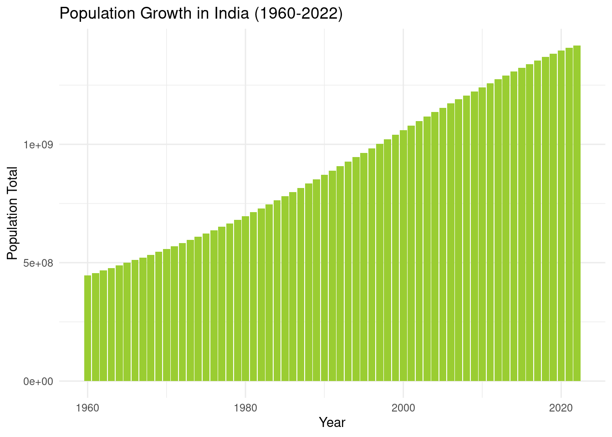
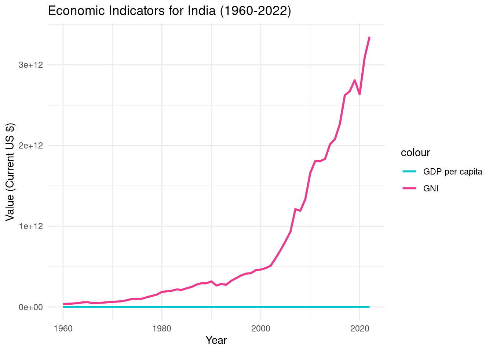
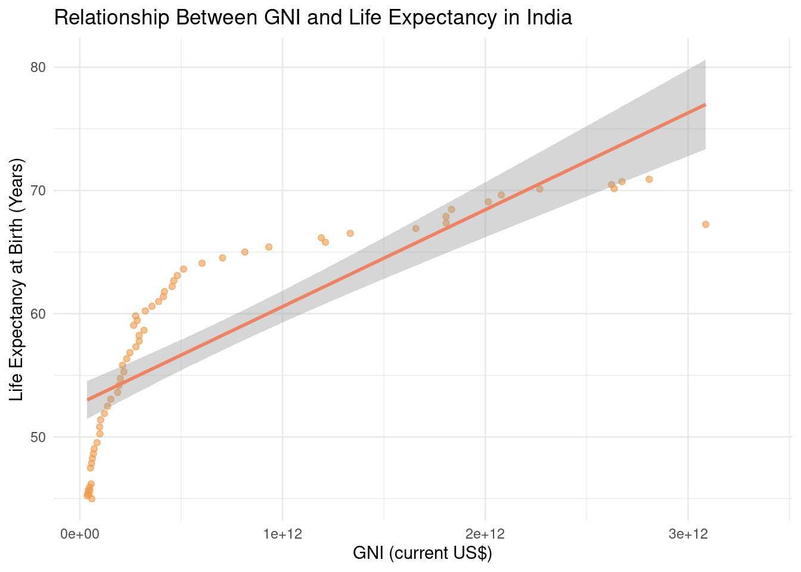

Introduction
In an ever-evolving global landscape, understanding complex socio-economic trends and health disparities becomes paramount for developing strategic interventions and policies. This report presents a series of data visualizations that illustrate significant patterns and insights into child nutrition, gender equality, population dynamics, economic health, and the interplay between income and life expectancy. Through these visual representations, we aim to provide a clearer picture of the challenges and opportunities that lie within different regions and demographics globally. Each visualization is designed not only to inform but also to provoke thoughtful analysis and prompt targeted actions.
Worldmap of Thinness Level
Key Observations:
- Countries with higher thinness percentages often correlate with lower economic development and unstable social conditions.
- This map can be used to prioritize areas for international aid and nutritional programs, aiming to reduce child mortality and improve health outcomes.

Worldmap of SIGI Levels
Key Observations:
- Countries with higher SIGI percentages show greater inequality, which affects women’s social, economic, and political participation.
- This visualization is crucial for policymakers and non-governmental organizations to identify regions where gender equality initiatives could have the most significant impact.

India’s Population Growth over the years
Key Observations:
- Rapid population growth poses challenges in terms of resource management, urban planning, and service delivery.
- The data underscores the need for effective policies in education, healthcare, and infrastructure to accommodate the growing population.

India’s Economic’s
Key Observations:
- A steady upward trend in both GDP and GNI reflects India’s economic development and increased global integration.
- Economic growth is linked to improved public services, healthcare, and education, contributing to better life quality for the population.

India’s GNI and Life Expectancy
Key Observations:
- The positive slope of the regression line indicates that as GNI increases, life expectancy also tends to rise, suggesting that economic prosperity contributes to better health outcomes.
- This relationship underscores the importance of economic growth in enhancing the quality and accessibility of healthcare services, which in turn boosts life expectancy

Conclusion
This collection of visualizations serves as a powerful tool for illustrating the diverse challenges and progress across different spectrums such as health, gender equality, and economic development. From the alarming rates of child thinness indicative of undernutrition to the strides and stumbling blocks in gender equality, and from India’s burgeoning population to its economic ascension, these charts reveal both disparities and opportunities. By delving into these graphical representations, stakeholders, policymakers, and researchers are better equipped to understand the nuances of socio-economic issues and health disparities. Ultimately, the insights garnered here should guide the crafting of more nuanced policies and interventions aimed at fostering equitable growth and improving lives globally. The visual data underscores the critical need for continued research and tailored approaches to address the unique challenges faced by various populations around the world.